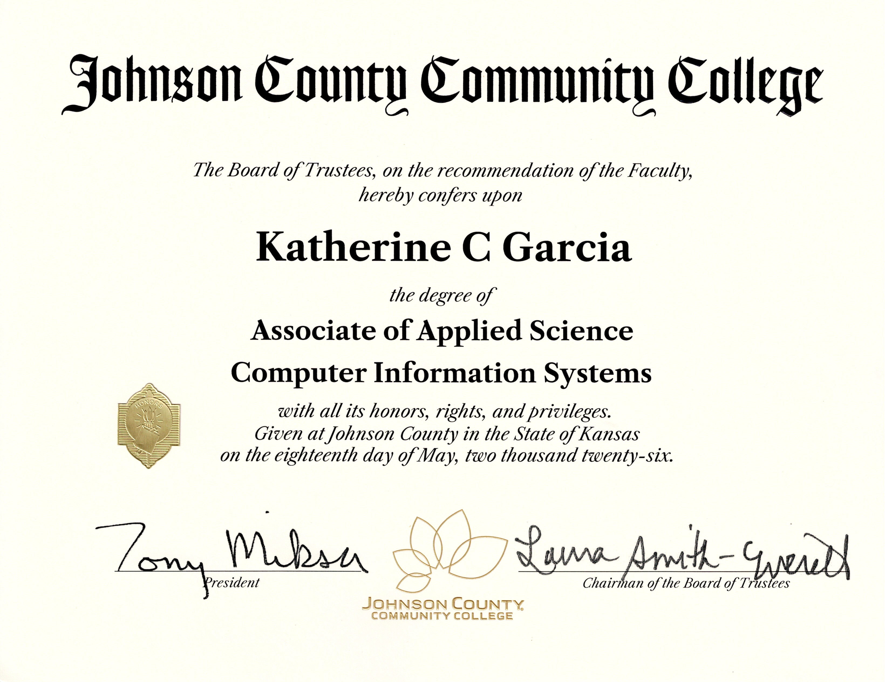

Indian Creek Cycle Rentals
A full bike-rental site built with a development team — browsing, trail guides, reviews, and booking flows for a family bike rental business.
- SQL
- GitLab
- HTML/CSS/JS
- QA Testing
- Hosting & Domain Mgmt
Kansas City, MO
I'm an aspiring QA Analyst and technology professional with experience building websites, working with SQL, Excel, and software projects. I enjoy solving problems and creating user-friendly applications.
About Me
I recently completed my Associate degree in Computer Information Science. Before transitioning into technology, I spent many years in warehouse operations, where I developed strong attention to detail, process improvement skills, and experience training others. I'm now focused on building software quality, data analysis, and web development skills — and I bring that same operational rigor to every test case, query, and page I ship.
I studied music at Truman State before my path led me into tech, so I've always thought in terms of practice, iteration, and getting the details right — habits that translate directly into QA work.
CliftonStrengths
My top five CliftonStrengths (Gallup) themes — two of which map directly onto QA work: diagnosing what's wrong and helping people improve.
01
Drawn to problems — good at spotting what's broken and working through it methodically until it's fixed.
02
Notices small signs of progress in people and gets energy from helping others grow and improve.
03
Comfortable going with the flow and adjusting as things change, rather than needing a fixed plan.
04
Energized by ideas — quick to spot connections between things that don't obviously relate.
05
Thinks things through deliberately and enjoys reflective, in-depth conversation.
Projects
Three shipped websites — designed, developed, deployed, and maintained end to end, including hosting and domain management.
A full bike-rental site built with a development team — browsing, trail guides, reviews, and booking flows for a family bike rental business.
A responsive site for a St. Louis trumpet performer, recording artist, and clinician — designed, built, and maintained solo, including hosting and domain configuration.
A personal site built to share celebrations with family — a lightweight, ongoing project with new sections added as the family's story does.
SQL Portfolio
A normalized MySQL database built to compare pet product prices, delivery times, and availability across nine retailers — designed, populated, and queried from the ground up.
A relational database comparing pet product prices across nine retailers (Walmart, Petco, Chewy, Amazon, and more). Built three normalized tables linked by primary and foreign keys, populated them with real product and pricing data, then wrote queries ranging from basic filtering to window functions, CTEs, and views to answer questions like which store is cheapest for a given product and which retailers offer the fastest delivery.
BASIC
SELECT, WHERE, ORDER BY, and LIMIT — filtering products by category and food type, searching by keyword, and sorting results.
INTERMEDIATE
INNER JOIN across all three tables plus COUNT, AVG, MIN, MAX, GROUP BY, and HAVING — average price per store, product counts by category, and stores with the fastest average delivery.
ADVANCED
Subqueries, CASE statements, a ROW_NUMBER() CTE to find the cheapest store per product, RANK() to rank stores by average price, and a reusable ProductPriceComparison view.
Excel & Power BI
Spreadsheet models and dashboards, added as they're built.
DASH_01
Drop in a screenshot and short description of an Excel or Power BI dashboard here.
DASH_02
Drop in a screenshot and short description of an Excel or Power BI dashboard here.
DASH_03
Drop in a screenshot and short description of an Excel or Power BI dashboard here.
QA Portfolio
Test cases, bug reports, and exploratory testing artifacts — to be filled in as this body of work grows.
TC
Add a sample test case document or link here.
BUG
Add a sample defect report here — steps to reproduce, expected vs. actual.
EXP
Add exploratory testing notes or session charters here.
PLAN
Add a test plan document here.
Certifications
Johnson County Community College
Johnson County Community College

May 2026LinkedIn Learning · NASBA CPE
LinkedIn Learning · NASBA CPE
LinkedIn Learning
Truman State University
Professional Summary
Recent Computer Information Systems graduate with a strong foundation in software testing, web development, SQL, and application support. Hands-on experience testing, troubleshooting, deploying, and supporting web applications through academic and personal projects. Detail-oriented with excellent analytical, documentation, and communication skills developed through more than 13 years working in quality-focused, fast-paced environments.
Indian Creek Cycle Rentals — Capstone Project
MarcGarciaTrumpet.com — Personal Website
Associate Degree, Computer Information Science
Certificate — Computer Information Systems: Software Developer
Bachelor of Arts in Music
Walmart Distribution Center — Kansas City, MO
ALDI Distribution Center — Olathe, KS
Contact
GitLab
gitlab.com/katiegarciaGitHub
github.com/katiegarcia89